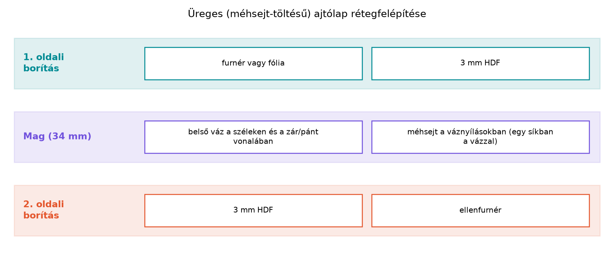

A megrendelő belép a műhelybe, és egy belső ajtót szeretne a fürdőszobába, egyet a hálószobába, és kér egyet a lakásbejárathoz is. A katalógusban sok hasonló ajtólap van, de az áruk nagyon eltérő. Ez a fejezet abban segít, hogy ne „egy szép lapot” lássunk, hanem a szerkezetet: mit tud, mennyire nehéz, milyen zaj- és hőszigetelést ad, és milyen pántot, zárat igényel. Az ajtólap a tokba illeszkedő mozgó szerkezet, amely nyitáskor-záráskor kilinccsel, pántokkal és zárral dolgozik. Ma a faiparban három fő ajtólapszerkezetet különböztetünk meg: a vázkeretes (betétes), az üreges (méhsejt-töltésű) és a tömör magú ajtólapot.
Képzelj el egy vízszintes metszetet az ajtólapon, mintha felülről vágnánk ketté. Kívül mindig egy borítóréteg van (furnér, HDF, laminátum, fólia), belül pedig egy mag. A mag szerkezete dönti el, hogy az ajtót mennyire könnyű megmozdítani, hogyan vezeti a hangot, és mennyire áll ellen a vetemedésnek. A vázkeretes ajtónál a mag egy keret és benne egy betét. Az üregesnél a mag egy belső vázból és méhsejt-töltésből áll. A tömörnél a mag szinte teljesen kitölti a lapot. Az alábbi ábra az üreges ajtólap rétegfelépítését mutatja:

Ez a felépítés magyarázza, hogy az üreges ajtó miért könnyű: a tér nagy részét nem fa, hanem levegő és vékony papír/méhsejt falak töltik ki.
Motiváció. Tömörfa ajtóknál a fa dolgozik: nedves időben dagad, fűtési szezonban zsugorodik. Ha egy tömör fa táblát mereven beragasztanánk egy keretbe, a tábla szétrepesztené a keretet, vagy saját magán keletkezne repedés. Ezért kell a betétet „úszva” elhelyezni.
Definíció. A vázkeretes (betétes) ajtólap olyan szerkezet, amely két függőleges keretoszlopból, legalább két vízszintes keresztkötőből (felső és alsó), és az ezek közé illesztett betétből áll. A betét anyaga lehet:
Szerkezeti szabály. A betét nem ragasztható be mereven a keretbe. A keret belső élébe nútot martak, a betét pedig ebbe a nútba illeszkedik, kis hézaggal (típustól függően kb. 3–6 mm mélységi hézag, tájékoztató, ellenőrizendő). A betétet középen rugalmas tömítőcsíkkal, filccel vagy pontszerű ragasztással rögzítjük, hogy a fa zsugorodása-dagadása ne feszítse szét a keretet. Továbbvitt eredmény. Ezt az „úszó betét” elvet használjuk a Válaszfalak, térelválasztók, tolóajtók és különleges épületasztalos termékek alfejezetben is.
Üvegezés. Az üvegbetétet az ajtólap belső oldalán üvegléccel fogjuk be. Az üvegléc csavarral vagy feszítővel rögzül, és a külső oldalát vékony tömítőcsík védi. Így az üveget cserélni lehet anélkül, hogy a teljes ajtót szétbontanánk.
Motiváció. A lakótelepi és modern lakások belső ajtóinak nagy részét üreges lapként gyártják. A cél: kis tömeg, jó síkban való méretpontosság, alacsony ár.
Definíció. Az üreges ajtólap olyan szerkezet, amelynek belsejében egy belső váz adja a merevséget, a váznyílásokban pedig egy méhsejt-töltés (cellulóz papír vagy farost) támasztja meg a borításokat. A lapot két oldalról borítólemez (HDF, MDF vagy rétegelt lemez, vastagság gyakran 3 mm, tájékoztató, gyártói adat szerint) zárja le. A borítólemezeket furnérral, CPL-lel, HPL-lel vagy fóliával borítjuk. A borítási technológiáról a Lapok furnérozása, préselés utáni műveletek, hibák és íves felületek borítása alfejezetben tanultunk.
Belső váz kialakítása. A belső váz fenyőfűrészáru vagy MDF rudakból készül. Két helyen mindig legyen teljes magasságú erősítés:
A keresztirányú vázrudak a zárblokk és a pántblokk között futnak, esetleg a kilincs magasságában egy vízszintes erősítés is van. A méhsejtet a borítólemez és a váz közé ragasztózzák, majd a préselés alatt a váz és a méhsejt is a borításhoz köt.
Figyelem. Üreges ajtóból csak nagyon keveset szabad levágni. Ha alul levágnak 5–10 cm-t, a szerkezet elveszíti az alsó vázrudat (zárókeresztkötőt), a méhsejt kihullik, a borítások szétnyílnak, és a lap tönkremegy. A rövidítés mértékét mindig a gyártó adja meg (ellenőrizendő: gyártói katalógus).
Motiváció. Ahol nagyobb hangszigetelés, erősebb csavarozhatóság vagy nagyobb biztonság kell, ott üreges lap nem elég. Ilyenkor tömör magú lapot választunk.
Definíció. A tömör ajtólap olyan ajtólap, amelynek magja a teljes felületen, hézagmentesen vagy közel hézagmentesen kitölti a borítások közötti teret. Fontos különbség: tömörfa ajtó és tömör magú ajtó.
Belső bejárati ajtólapnak sokszor tömör magú lapot választunk, mert a lakás és a közös folyosó közötti hang- és illetéktelen behatolás elleni védelem fontosabb, mint a szobák közötti ajtónál.
A külső bejárati ajtólap és a belső ajtólap között a fő különbség a környezeti terhelés. A külső oldal csapóesőt, UV-sugárzást, hideget és meleget, a belső oldal fűtött lakóteret kap. Szabály. A külső bejárati ajtólapot úgy kell kialakítani, hogy a hőmérséklet- és párakülönbség ne okozzon vetemedést, rétegelválást vagy gombásodást; a szerkezet feleljen meg a gyártó által megadott időjárásállósági követelményeknek (ellenőrizendő: építési termékre vonatkozó teljesítménynyilatkozat, MSZ EN harmonizált szabvány szerint).
A külső bejárati ajtók jellemző felépítése:
Betörésvédelem. A bejárati ajtónál a lap mellett ugyanolyan fontos a tok, a vasalat, a zár és a falba építés. A betörésállósági osztályokat (például RC2, RC3) a teljes ajtórendszerre adják meg, nem külön a lapra (ellenőrizendő: aktuális MSZ EN betörésállósági szabvány). Figyelem. Ha a vevő biztonsági ajtót kér, nem elég erős lapot választani; a pántokat, zárat, tokot és rögzítést is a minősített rendszer szerint kell összeállítani.
A belső bejárati ajtó a lakást választja el a lépcsőháztól vagy a közös folyosótól. Követelményei összetettek:
Figyelem. A tűzgátló és hanggátló ajtókat csak tanúsított rendszerként szabad gyártani és beépíteni. A tanúsítás a teljes rendszerre vonatkozik: ajtólap, tok, pántok, zár, tömítések, üvegezés, sőt a falba építés módja is. A gyártó által bevizsgált részeket nem szabad kicserélni, átalakítani vagy egyszerűen „hasonlóval” pótolni.
Tűzgátló ajtó. A tűzgátló ajtó feladata, hogy tűz esetén meghatározott ideig (például EI30, EI60 – 30 vagy 60 perc, ellenőrizendő) megakadályozza a tűz és a füst átterjedését. A mag hőálló anyagból készül (például ásványi mag, gipsz, vagy hő hatására vizet felszabadító lap), a tokban és az ajtólapon hőre habosodó tömítés zárja le a réseket. Tilos. Tűzgátló ajtót lefaragni, átfúrni, a tömítést eltávolítani vagy kicserélni. Minden módosítás a minősítés elvesztését jelenti.
Hanggátló ajtó. A hangszigetelés elsősorban a tömegen és a tömítésen múlik. Üreges ajtóval nem lehet komoly hanggátlást elérni. A hanggátló ajtólap nagyobb sűrűségű magot, nehéz borítást, a tokban és a lap élén pedig jól záró tömítést kap. A padlóhézagot is megfelelően kell méretezni.
Motiváció. A vevő telefonon rendel: „Kérek egy belső ajtót, jobbra nyíljon.” A műhelyben ez a mondat félreértésekhez vezet, mert a „jobb” attól függ, honnan nézzük. Ha rossz oldalra kerül a zár, a kilincs vagy a pánt, a teljes lapot cserélni kell.
Szabály. A nyitásirányt a pántok felőli oldalról nézve határozzuk meg. DIN bal az ajtó, ha a pántok a bal oldalon találhatók; DIN jobb, ha a pántok a jobb oldalon vannak. Ez a hazai és európai gyakorlatban elterjedt jelölés (ellenőrizendő: aktuális ajtószabvány, gyártói jelölés).
Gyakorlati lépések:
Az alábbi ábra a két esetet alaprajzzal együtt mutatja: a pántok felőli oldalról nézve a bal oldali pánt DIN bal, a jobb oldali pánt DIN jobb ajtót jelent, a szárny a néző felé nyílik. A harmadik kép a tipikus tévedést mutatja: ugyanaz a DIN bal ajtó az ellenoldalról nézve „jobbosnak” látszik, ezért a besorolást mindig a pántos oldalról végezzük.
A dokumentáción mindig jelölni kell:
Szabvány. Az ajtók méreteivel, jelölésével és terminológiájával kapcsolatos követelményeket harmonizált európai szabványok tartalmazzák (ellenőrizendő: a pontos szabványszám, például az MSZ EN 12519 és a kapcsolódó termékszabványok). A szabványos jelölés célja, hogy a megrendelést a műhelyben ne lehessen félreérteni.
Az ábra két vízszintes metszetet mutat a kilincs magasságában (lapméret 900 × 2000 × 40 mm). A vázkeretes lapnál a 120 mm széles keretoszlopok belső élébe 10 mm mély nút kerül, ebben úszik a 20 mm-es rétegelt betét 3–6 mm mélységi hézaggal, rugalmas rögzítéssel. Az üreges lapnál 3 mm HDF + 34 mm mag + 3 mm HDF = 40 mm: a magban a széleken belső váz és zárblokk, a váznyílásokban méhsejt van. Az egyik lapél tompa, a másik falcos (felütődő) kivitelű. A keresztkötő a vízszintes metszetben nem látszik, csak függőleges metszetben.
A metszetről leolvasható, hogy az üreges ajtónál a borítás a fő teherviselő, a váz a vasalat fogadására szolgál; a vázkeretesnél a keret adja a merevséget, a betét csak kitölt.
Az ajtólap a tokhoz kétféleképpen csatlakozhat, és ettől függ a lap mérete, a pánt típusa és a tok kialakítása.
Definíció. A falcos (felütődő) ajtólap élén körbefutó falc (lépcső) van, amely becsukott állapotban rátakar a tokra, és a tok ütközőfalcába ütközik; a résbe tömítőprofil kerül. A tompa (síkban záródó) ajtólapnak nincs falca: a lap a tok szabad nyílásába illeszkedik, és a tokkal egy síkban záródik; ehhez gyakran rejtett pántot használnak.
Lapméret a tok méretéből. A tok szabad nyílásából indulunk ki (az Ajtótokok fajtái és szerkezete példájában: tok külső szélessége 880 mm, tokborda 30 mm, szabad nyílás 880 − 2 · 30 = 820 mm).
Pánt. Falcos lapnál hagyományos falcos ajtópánt (csaplapos) vagy csavarozott pánt, tompa lapnál rejtett (süllyesztett) pánt használatos; a típust és a teherbírást a gyártói adatlap szerint választjuk (ellenőrizendő).
Feladat. A vevő egy 900 mm széles, 2000 mm magas, 40 mm vastag ajtólapot rendel. Kiszámítjuk a tömegét üreges és tömör magú kivitelben. A sűrűségek tájékoztató értékek, gyártói adattól függenek.
Adott:
Keresett: az ajtólap térfogata és tömege.
1. lépés: Térfogat számítása
2. lépés: Tömeg számítása
Üreges ajtónál:
Tömör magú (MDF) ajtónál:
Ellenőrzés. Az üreges ajtó tömege nagyjából a tömör ajtó harmada, ami megfelel a gyakorlati tapasztalatnak. ∎
Tanulság. A 18 kg-os üreges ajtót könnyű beépíteni, két pánt elég. Az 52 kg-os tömör ajtót már három pánttal kell felszerelni, és a tok rögzítését is erősebbre kell tervezni (a pántok számát és teherbírását a vasalat gyártójának adatai szerint kell választani – ellenőrizendő).
Az ajtólap átvételekor a következőket ellenőrizzük:
Ha eltérést találunk, a lapot ne vágjuk fel, ne csomagoljuk be; jelezzük a beszállítónak, és a reklamációhoz dokumentáljuk a hibát.
Egy társasházi lakás felújításakor a tulajdonos üreges belső ajtókat kért a hálószobába, mondván, hogy olcsóbb és könnyű. Az asztalos jelezte, hogy a szoba a lépcsőház mellett van, és a folyosóról behallatszik a beszéd. A tulajdonos mégis az üreges mellett döntött. A beépítés után a zaj zavaró lett. A javítás során az asztalos elmagyarázta, hogy a hanggátláshoz nagyobb tömeg kell, és a hang a padlóhézagon, a tok és a fal közötti résen is átjut. Végül tömör magú ajtólapot rendeltek, a tok környékét akusztikus habarcsba építették, és a tokra jól záró tömítést szereltek. Tanulság: a hanggátlás nemcsak a lapon, hanem a teljes beépítési rendszeren múlik.
Válaszok az Önellenőrzéshez:
1. feladat (A). Fogalmazd meg egy mondatban, mi a különbség a tömörfa ajtólap és a tömör magú (MDF) ajtólap között!
2. feladat (A). Nevezd meg a vázkeretes ajtólap három fő szerkezeti elemét!
3. feladat (B). Számítsd ki egy 0,9 m széles, 2,1 m magas, 0,045 m vastag tömörfa (tölgy) ajtólap tömegét! A tölgy sűrűsége 750 kg/m³ (tájékoztató, ellenőrizendő).
4. feladat (B). Rajzold le szövegesen (nézet-metszet) egy üreges ajtólap vízszintes metszetét a kilincs magasságában! Nevezd meg a rétegeket kívülről befelé!
5. feladat (C). Egy vásárló biztonsági bejárati ajtót szeretne. Elég lenne-e csak egy tömör, erős ajtólapot venni, ha a tokot és a pántokat nem cserélik? Indokold!
6. feladat (D). Egy társasházi lakásbejárathoz tűzgátló ajtót kell választani. Sorold fel, mit kell ellenőrizned a megrendelésnél, és miért tilos a lapot utólag módosítani!
1. feladat. A tömörfa ajtólap anyaga és magja is tömör fűrészáruból készül; a tömör magú (MDF) ajtólap magja MDF-ből, forgácslapból vagy hasonló, kötőanyaggal préselt anyagból készül, és a felületét borítás adja.
2. feladat. Keretoszlop, keresztkötő, betét.
3. feladat. . .
4. feladat. Kívülről befelé: furnér vagy fólia, 3 mm HDF borítás, méhsejt-töltés, belső váz (fenyő vagy MDF) a széleken és a zár/pánt vonalában, 3 mm HDF borítás, ellenfurnér. A metszeten a méhsejt cellás rajzolattal, a borítás pontozott vagy fekete, a váz hosszanti rostsraffozással jelölhető.
5. feladat. Nem. A biztonsági bejárati ajtó a teljes rendszer: lap, tok, pántok, zár, tömítések és a falba építés. Ha csak a lapot cserélik, a gyenge pánton, tokon vagy a falnál keresztül is betörhetnek, így az ajtó nem adja a betörésvédelem szintjét.
6. feladat. Ellenőrizni kell: a gyártói tanúsítványt a teljes rendszerre (lap, tok, vasalat, tömítés, üvegezés); a beépítési utasítást; a típusazonosító táblát; a rendeltetést és a tűzvédelmi osztályt (például EI30). Tilos módosítani, mert a bevizsgált rendszer bármely része nem cserélhető, lefaragás, fúrás vagy más alkatrész beépítése a minősítés elvesztését jelenti.
A vázkeretes, üreges és tömör ajtólapok a faipari ajtógyártás három alapvető szerkezetét adják. A vázkeretes ajtólapon a keret adja a merevséget, a betét úszva, nútban szabadon mozoghat, ezért a fa mozgása nem repeszti meg. Az üreges ajtólap belső vázból, méhsejt-töltésből és külső borításból áll: könnyű, síkban stabil, de rossz hangszigetelő és alulról alig rövidíthető. A tömör ajtólap magja hézagmentesen kitöltött, lehet tömörfa vagy MDF/forgácslap alapú; nagyobb tömeg, jobb hangszigetelés. A külső bejárati ajtónak hő- és csapóeső-állóságot, a lakásbejáratnak hang- és tűzvédelmet kell teljesítenie. A tűzgátló és hanggátló ajtókat csak tanúsított rendszerként szabad beépíteni és módosításuk tilos. A nyitásirányt a pánt felőli oldalról nézve jelöljük: DIN bal, ha a pánt bal oldalon, DIN jobb, ha a pánt jobb oldalon van. Továbbvitt eredmény. Az ajtólap-szerkezeteket a Ajtók gyártástechnológiája gépekkel alfejezetben építjük műhelygépeken, a vasalatok oldalát és a pántokat pedig a Válaszfalak, térelválasztók, tolóajtók és különleges épületasztalos termékek alfejezetben illesztjük a teljes szerkezethez.
A szakmai alapelvek és a szerkezetek leírása a faipari ajtógyártási gyakorlatból, a korábbi alfejezetekben bemutatott anyagismereti és lapgyártási tananyagból származik. Az ajtókra vonatkozó harmonizált európai szabványok pontos száma, a betörésállósági osztályok és a tűzgátló ajtók teljesítményjelölése, a gyártói méretek és a rövidíthetőség határai, valamint a DIN szerinti jelölés szabványhivatkozása az adott gyártó és az aktuális szabvány szerint ellenőrizendő.